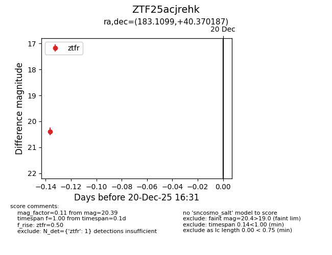
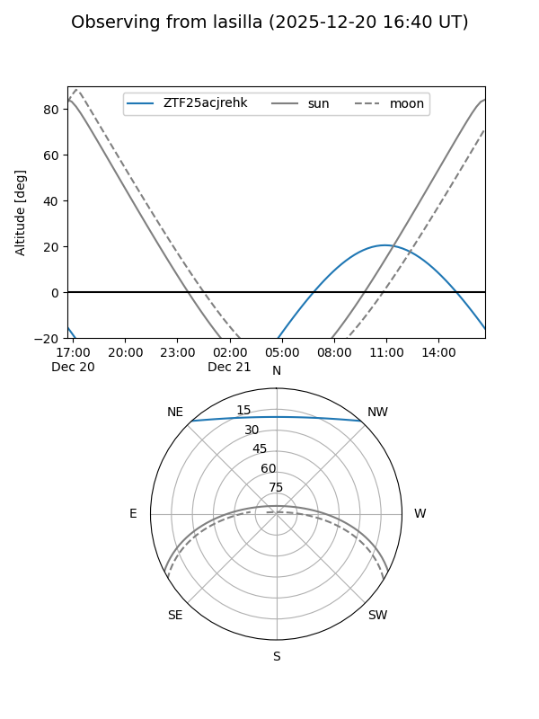
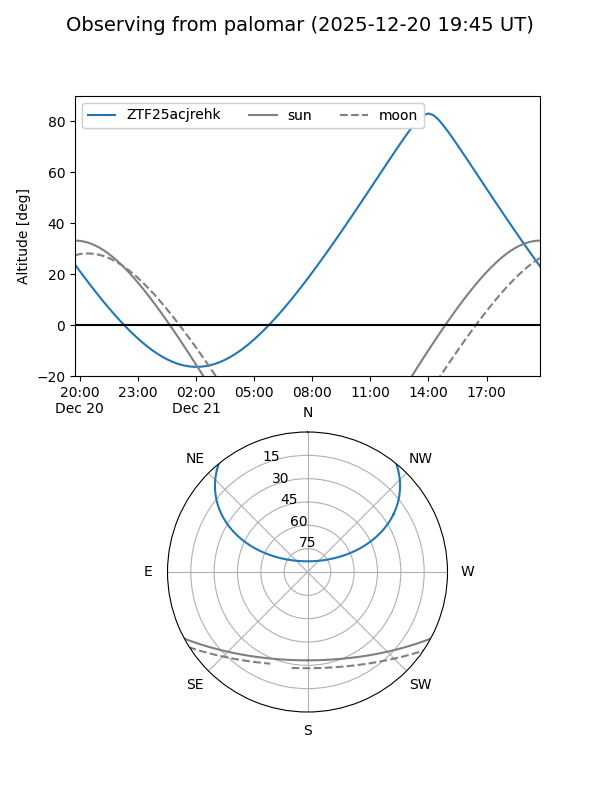

ZTF25acjrehk
Target ZTF25acjrehk at 2025-12-20 16:32
Aliases and brokers:
FINK: fink-portal.org/ZTF25acjrehk
Lasair: lasair-ztf.lsst.ac.uk/objects/ZTF25acjrehk
ALeRCE: alerce.online/object/ZTF25acjrehk
alt names
ZTF25acjrehk (ztf,fink_ztf)
Coordinates:
equatorial (ra, dec) = 183.1099,+40.37019
equatorial (HMS+DMS) = 12:12:26.39,+40:22:12.67
galactic (l, b) = (151.7939,+74.49746)
Flags:
Photometry:
last ztfr=20.39
1 ztfr detections
Lightcurve

Visibility


Additional plots